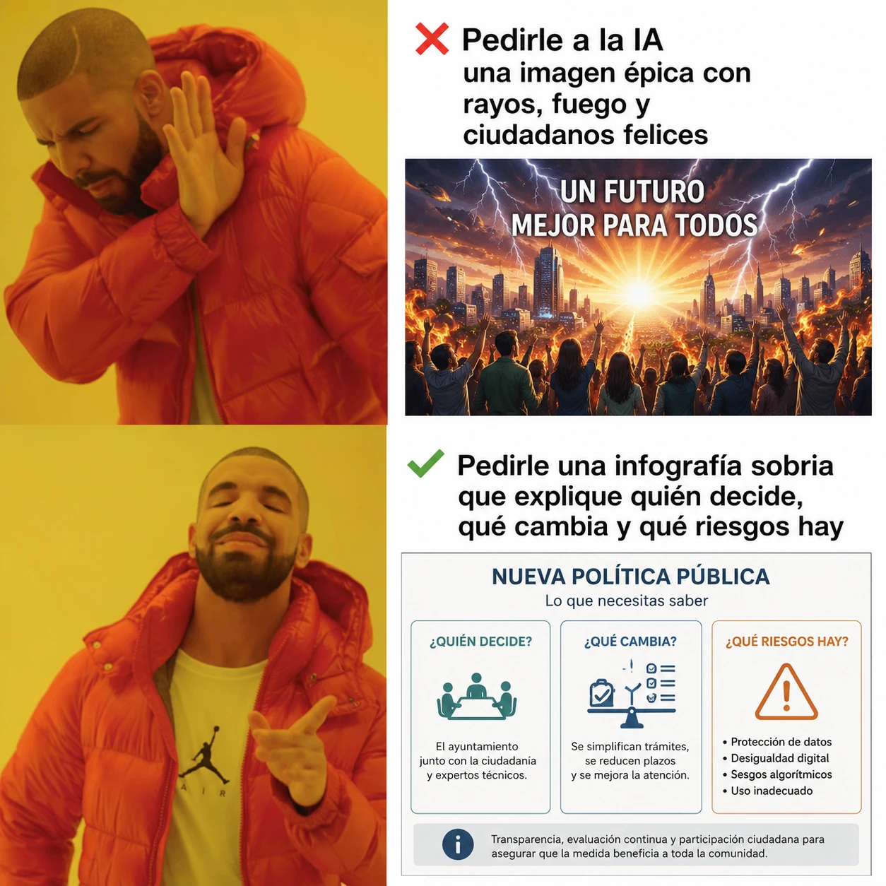

estrategIA #135 ·
Menos épica, más explicación
El contexto
Una imagen espectacular puede prometer un futuro feliz sin explicar ninguna medida. La segunda opción pide una infografía que diga quién decide, qué cambia y qué riesgos existen. El artículo sobre imágenes generadas con IA planteaba usar esa capacidad para informar mejor en la comunicación pública.
Publicado en: estrategIA #135 — De Nano Banana Pro a ChatGPT Images 2.0: el salto de la IA visual en la comunicación política y de gobierno
Leer el texto de la imagen
Pedirle a la IA una imagen épica con rayos, fuego y ciudadanos felices UN FUTURO MEJOR PARA TODOS Pedirle una infografía sobria que explique quién decide, qué cambia y qué riesgos hay NUEVA POLÍTICA PÚBLICA Lo que necesitas saber ¿QUIÉN DECIDE? El ayuntamiento junto con la ciudadanía y expertos técnicos. ¿QUÉ CAMBIA? Se simplifican trámites, se reducen plazos y se mejora la atención. ¿QUÉ RIESGOS HAY? Protección de datos. Desigualdad digital. Sesgos algorítmicos. Uso inadecuado. Transparencia, evaluación continua y participación ciudadana para asegurar que la medida beneficia a toda la comunidad.